得罪了方丈還想走？
雖然不是如預期中有網路的旅館，但至少也讓我好好的睡上一覺，早上睡到自然醒等著去通關。
簽證效期的最後一天，也是進入歐洲的第一天，旅行有倒吃甘蔗的感覺，接下來的路會比較平坦好走。
前提是進得去歐洲的話。
早上退房的時候才付住宿費，員工跟昨天那一位很明顯不一樣，價錢也亂算一通。
昨天報的價錢是32元美金，早上就變成九萬塊白俄羅斯的貨幣，相當於45元美金。
還問我有沒有使用停車場？我說我騎自行車來的，她就在費用上多加一筆摩托車的停車費，圈妳個叉叉大西瓜！
一大早就在櫃檯為了住宿費的計算問題據理力爭，幸好昨天那個員工隨筆寫的報價單還算有效力，小多停在儲藏室也不用收費。
付帳的時候不收美金，只好拿五十美金去旅館內的兌幣處換成白俄羅斯貨幣，都已經決定要花光光才出境，結果又換回一堆在手上。
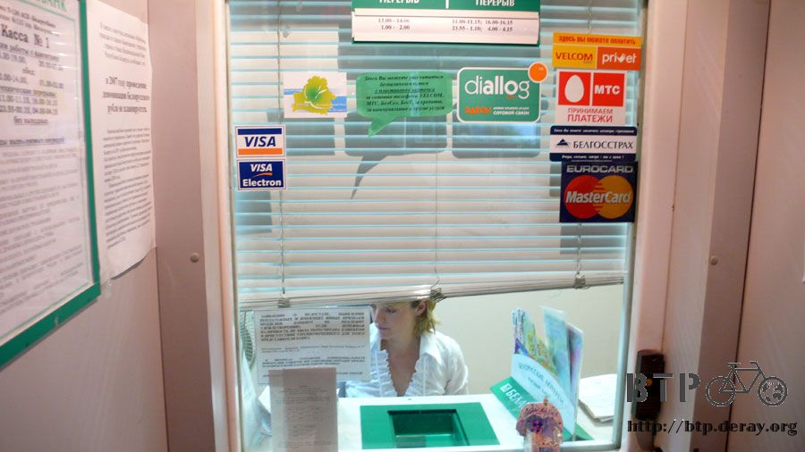
離開旅館依照指示牌的方向往國境騎去，昨天那個鬼畫符的地圖的確是一條大河。
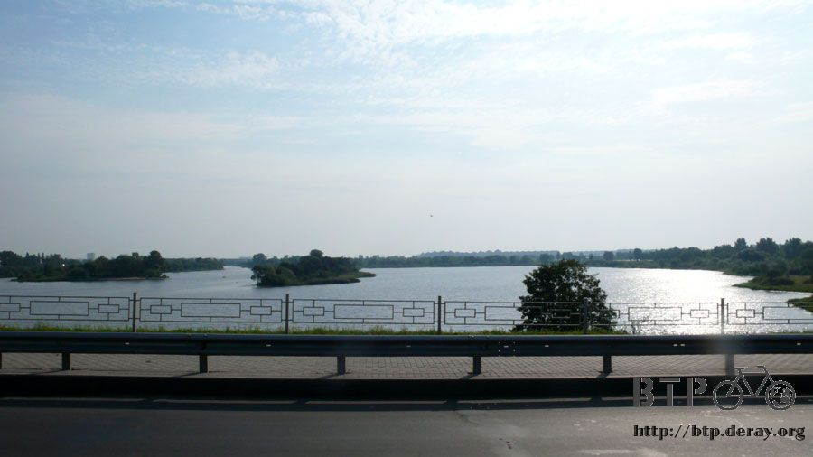
過河之後右轉，直走兩公里即是國境，在到國境之前會有一個小的崗哨，車輛也在此分道，騎車靠過去問崗哨的人員自行車該走哪一邊？
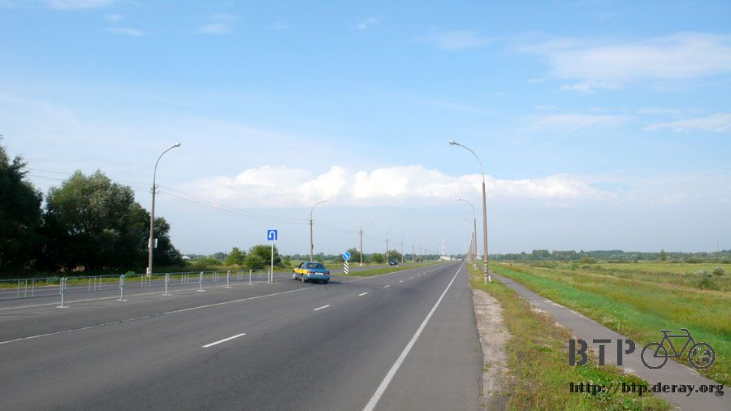
崗哨的人叫我護照拿出來看，將護照交過去，他就一頁一頁的翻著簽證，我心裡想說有什麼好看的，我又不是偷渡進來。
崗哨的人翻完護照之後跟我說：『朋友，我們有麻煩了，而且是大麻煩。』

前面五百公尺就是國境，我卻被攔在這裡一步也跨不過去。
崗哨人員說我只有俄羅斯的簽證，沒辦法從白俄羅斯出境，甚至他也很懷疑我是怎麼入境白俄羅斯的。
接著就開始打電話請示上級，講了好久之後他笑笑的掛上電話，我還以為沒事了，畢竟都讓我入境了，有可能不讓我出境嗎？
掛上電話之後他跟我說，上級要你回城裡到相關單位去補辦簽證，地址是巴拉巴拉街十二號。
當下讓我整個很錯愕！
第一：我是要出境耶～為了出境而去辦簽證是在搞屁呀？
第二：我才剛從城裡騎過來，現在又要騎回去，就算要補辦簽證好了，在國境這裡不能辦嗎？
第三：那個什麼巴拉巴拉街十二號我怎麼可能知道在哪邊？手上又沒地圖，叫我騎回市區不就是找死的意思嗎？
第四：今天就是俄羅斯簽證效期的最後一天，如果白俄羅斯的簽證沒辦法在一天之內核發下來的話，我就變成逾期停留，到時候麻煩會越來越多。
當下很有要暈倒在路邊的感覺，遇到麻煩不要緊，想辦法解決就好。
拿出筆記本給崗哨人員，他叫做沙夏，請他把剛剛說的那一條巴拉巴拉街的名字寫在筆記本上，也幫我畫一張簡單的地圖。

地圖畫出來就是這樣，從目前的位置往回騎，過剛才那一條河，遇到紅綠燈左轉，然後右轉接著左轉，就可以到補發簽證的機構。
地圖看起來很簡單，實際上真的照這張地圖就找到了巴拉巴拉街十二號。

位於小巷子裡面，門口沒有掛十二號的牌子，但是有兩塊黑色的大招牌，俄文看不懂，但應該是這裡沒錯，將小多停在門口準備進去辦簽證。
進去裡面當然別期望會有人熱情的招呼，甚至說『您就是剛才在國境那位沒有簽證需要補辦的旅行者是吧？請跟我來，有專人為您服務。』
這根本就是比中樂透還要空洞的幻想，一進去裡面看到人就問簽證在哪裡辦？
也是來辦事的民眾說在二樓，就是這個白色的門，才準備要進去問簽證事宜，費用、幾天會核發下來等等，就被門口的民眾攔下來。
『請排隊。』
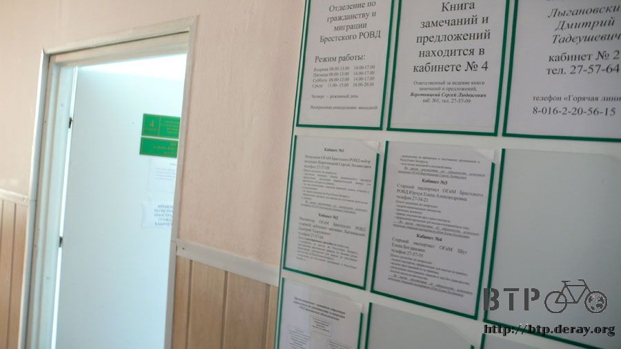
現在是上午十點半，我的簽證效期在十三個小時就要失效，居然還得傻傻的跟著一般民眾一起排隊。
半小時後終於輪到我，進去裡面用俄文夾雜英文解釋我需要白俄羅斯的簽證才可以出境。
辦理簽證是為了要『出境』而不是入境，裡面的辦事員也是一臉『你麻煩大了』的表情，站起身來叫我跟她走。
這棟大樓分左右兩半，目前位在右半邊，員工都是穿便服的媽媽，她帶著往我左半邊走，一打開門裡面全部都是穿藍色制服的警察人員。
我只是來辦簽證，居然二話不說就把我帶去給警察處理，真是夠狠。
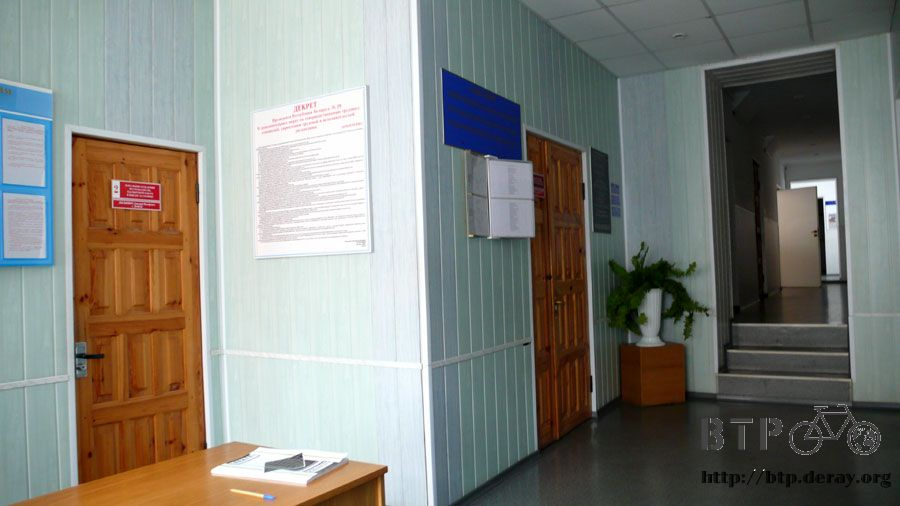
一位肩上別著四顆星星的警官翻完護照之後問我是幹嘛的？小小聲的回答自己是單車旅行者。
接著他聲音越來越兇，『你拿著俄羅斯的簽證居然敢闖進白俄羅斯？你知不知道這是非法入境？現在我就可以立刻逮捕你讓你去坐牢？』
雖然我很想解釋說從俄羅斯進入白俄羅斯的關卡並沒有被攔阻，而且在首都明斯克遇到警察查看護照也沒有說有什麼問題。
但是這兩個解釋用英文或是俄文都很難講清楚，而且胡大哥有開示過，不要跟當地的警察囉嗦太多，就算你講的有道理對方也不見得願意聽。
所以我只是立正站好，用標準的夾蛋姿勢聽訓，當過兵的人要做到這一點並不困難，挨罵乃家常便飯。
當警官說到要把我抓去關的時候，我心裡只想到可不可以讓我跟小多關在一起？
不然小多一輛車在外面肯定會被整台偷走，等我出獄之後就見不到他了。
一邊聽訓一邊想說不知道自己會被關多久？三天還是一個月？會有人把我保出去嗎？會不會上台灣的新聞？獄友不知道好不好相處？
甚至已經開始想到裡面的伙食味道怎麼樣？之前看影集『越獄』不知道能不能如法炮製？
被整整罵了十多分鐘之後，警官看我一點反應也沒有，既不反駁也不解釋，只是乖乖的立正站好挨罵，看起來似乎有在反省的樣子。
他搖搖頭大嘆一口氣，站起身來叫我跟他走。
終於要把我抓去關了，等一下會換上黑白相間的囚衣拍照嗎？
跟著警官繞過走廊打開另一扇門，裡面不是監牢，而是另外一位美麗的女警官。
男警官跟她說『幫這個找麻煩又不知死活的台灣人辦一張過境簽證』。
當下心裡鬆了好大的一口氣，沒有要把我抓去關，而是要幫我出境。
立刻鞠躬道謝，男警官揮揮手說不用謝，下次有種再試試看，一定讓你嚐嚐牢獄之災。
他走了之後終於才敢坐在椅子上，真是嚇死我了，不過是一張簽證，還以為補辦好就沒事，結果越搞越頭大。
坐在椅子上看著女警官，她說我需要付錢辦簽證，這時候我才終於理解『可以用錢解決的事情，通通都是小事』這句話的意義。
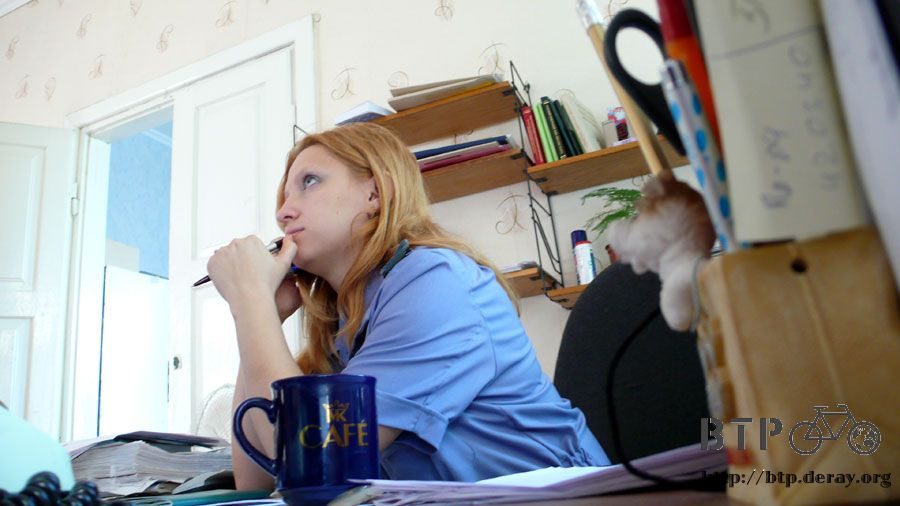
簽證的費用一點也不便宜，而且為了預防貪污，他們不直接經手現金，寫了一張紙給我，雖然看不懂但猜也猜得出來。
上頭列了三筆費用，分別是六萬兩千元、六萬兩千元跟一萬元。
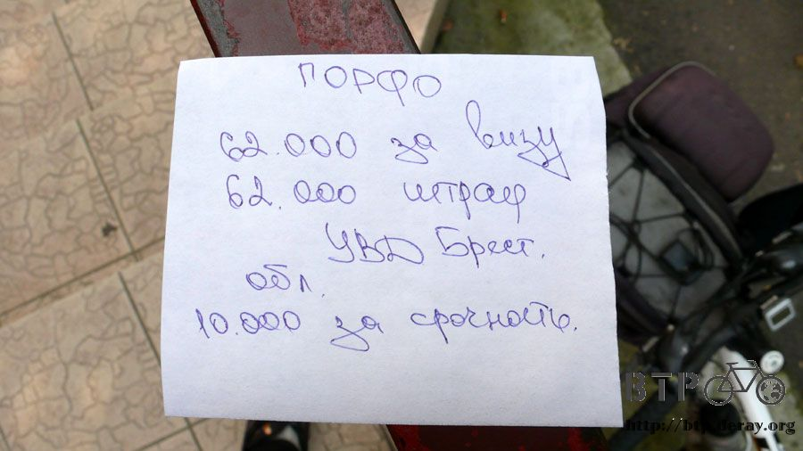
女警官拿著這一張紙叫我去匯款，我本來想拿出筆記本再度請對方幫我畫張地圖，從這裡要去哪邊找才有銀行可以匯款？
而且這張紙上面又沒有寫匯款帳號之類的資訊，拿去銀行有辦法處理嗎？心中帶著滿腦子的疑問，還是先離開這棟警察局兼簽證中心要緊。
走出大門的瞬間，我心裡想的是『我要逃跑！』
剛才只差一點點就要被抓去關了，現在好不容易全身而退得以走出來，還不快逃？
逃亡的路線就是往回騎八天重新返回俄羅斯，在這麼情急之下，說不定騎快一點六天就可以到了。
然後到外交部駐莫斯科辦事處申請延長俄羅斯簽證，接著走聖彼得堡進入北歐。
但這些計劃要在俄羅斯簽證失效的情況下進行，萬一往回走的這一路上又被警察攔下來的話，當場我就吃大便了。

不可以逃～不可以逃～不可以逃～不可以逃～不可以逃～不可以逃～不可以逃～不可以逃～不可以逃～不可以逃～
淀真嗣那麼孬種都可以駕駛EVA跟使徒對決了，我逃個屁呀？
循規蹈矩的試著補辦白俄羅斯簽證然後出境才是正途。
沒地圖的情況下繞在大街道上尋找著銀行的招牌，網路雖然很難找，銀行相對之下很容易就可以找到，眼睛利一點就好了。

進到這間銀行之後將女警官寫給我的紙條貼在玻璃窗上給行員看，這一瞬間很像在塞紙條表明自己要搶銀行。
行員看了之後，搖搖頭說這裡沒辦法辦理這樣的業務。
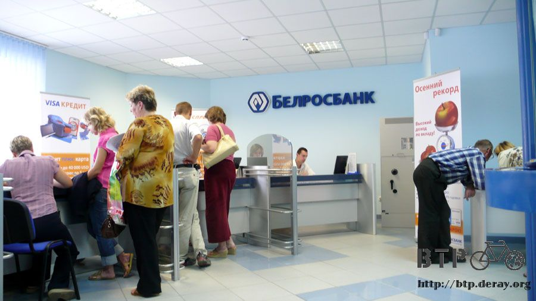
這麼大一間銀行居然連匯款都不行，實在太遜了，好不容易才找到這一間，豈能空手而回。
紙條上面寫的貨幣又是白俄羅斯的錢，身上根本沒有十三萬可以用，所以在這邊又換了一張一百美金，拿著二十多萬的現鈔繼續找其它間能夠處理的銀行。

這是第二間找到的銀行，規模看起來比剛才那一間還小很多，裡面更是小得誇張，只有一個窗口而已。

就跟著大家一起排隊，輪到我之後再度將紙條交出去，剛才那麼大一間都不能辦理，對這一間銀行其實沒抱什麼期望。
行員看著紙條，然後看著我，『要辦可以呀～錢呢？』

太棒了！這種小不啦嘰的銀行居然可以處理這種麻煩的匯款業務，馬上拿出十五萬請行員處理。
五分鐘之後我就拿到三張繳款完畢的收據，順利得自己都覺得很不可思議，還好沒有掉頭騎回莫斯科，不然這一路上一定會邊騎邊哭。

這個時候已經十一點半，將近中午了，俄羅斯簽證效期還剩下十二個小時，理想狀況是等一下就能拿到白俄羅斯簽證然後今天就出境。
但這個時候還是不要往理想狀況設想比較好，想一點挫賽的狀況該怎麼應對比較實際一點。

拿著收據又騎回簽證處，自己走到女警官的門口敲門進去，看到我真的順利繳款回來，對方比我還驚訝，確認單據無誤之後就是等待的開始了。
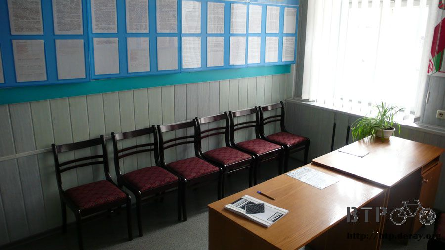
她叫我坐在椅子上等，而不是回家去過幾天再來拿，所以應該是當天就能夠拿到簽證的意思吧？
一等就是一個多小時，我坐在椅子上怎麼可能坐的住，每隔三分鐘就要起身走到樓下去查看停在門口的小多狀況如何。
大多時候下去看都是無事平安，有時候會看到死小孩對小多很感興趣，你要是有種把車子給踢倒的話，我一定會揍得你哇哇大哭。
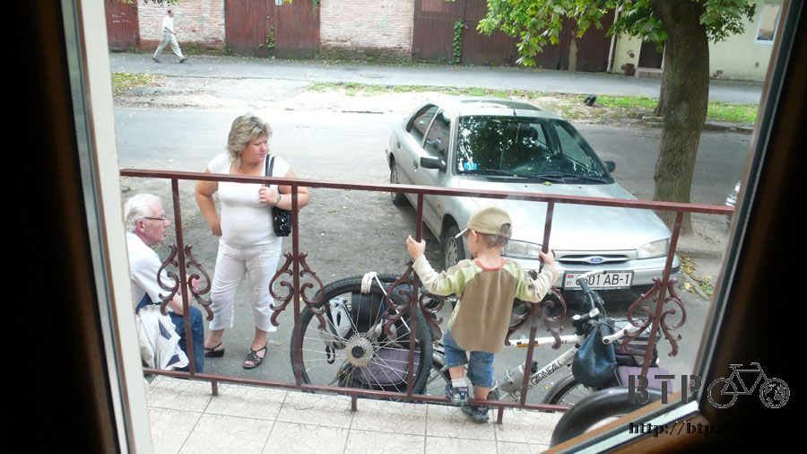
等待的時候看著簽證處的一些表格和公文，這一份就是入境俄羅斯的時候所填寫的AB卡，A卡在入境的時候收走，B卡還在身上，出境才要繳回。
這張表格的上面明明很清楚的就寫著是俄羅斯跟白俄羅斯通用的表格，當初也是看到這一點才敢走白俄羅斯，現在居然跟我說沒有簽證不能出境？

等待的時候總覺得時間特別漫長，來來回回的查看小多跟在二樓等簽證，一個多小時後終於有好消息了。
簽了幾份文件，白俄羅斯的過境簽證順利到手！

這本護照能夠有這一張難得又罕見的簽證也算是有價值了。
右下角的費用欄明明寫著五十美金，但是剛才卻到銀行繳了十三萬多的白俄羅斯貨幣，將近七十美金，就當是急件費用吧。
此時沒有什麼比拿到這張簽證更令人高興的！
女警官解釋說這一張是過境簽證，效期從今天開始算，一共有三天。
這表示什麼？我可以在邊境之城多玩三天的意思嗎？鬼才要待在這邊三天咧，拿著熱騰騰的簽證準備再度去通關。
在這之前有重要的事情得處理，早上繳旅館住宿費跟剛才繳簽證費用的時候都換了錢，身上的白俄羅斯貨幣越來越多，設法努力的花光它！

在公車站的周邊都有商店攤，打算購入一大堆的巧克力當備用糧食，不知道是誰在跟我搶巧克力，連續問了五間商店攤全部都說缺貨。
好不容易找到一間有賣的，一口氣先來五包巧克力，這樣子就花掉一萬元了。

昨天才買了一堆蛋糕，現在要塞這些巧克力得傷一下腦筋，接著重新爬過橋樑再度去國境報到。
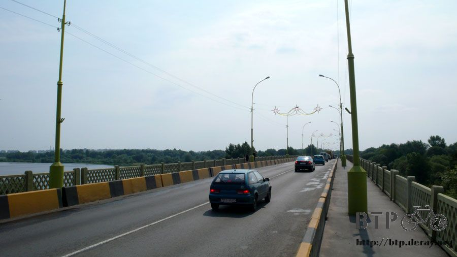
歷經三個小時，我又回來了～崗哨人員－沙夏看到是我，停下手邊攔檢的工作問我簽證有拿到嗎？
『有呀！你的地圖幫了很大的忙，非常感激你。』
很想拍一張沙夏的照片，但是他說執勤中不能拍照，所以很可惜的沒有他的照片，用文字形容的話，他長得很像瑪莉歐兄弟裡面的路易。
在國境邊的餐廳進行採購，一樣是買巧克力，這次買一條一條的那種，店員指著櫃子裡的巧克力問我要幾條？
『全部都給我。』
總計一共買了九條巧克力，外加三瓶汽水，一瓶拿回去崗哨那邊給在大太陽下執勤的沙夏解渴，一瓶當坐午餐的飲料喝，最後一瓶帶著走。
買完東西之後順便在這裡吃午餐，點了炸雞排配上薯條，當然湯點、沙拉、咖啡、麵包那些全部都有，就不一一介紹了。

買了這麼多東西，外加這一頓午餐，才花了兩萬七千元，怎麼花錢這麼困難，手頭上還有六萬多的白俄羅斯貨幣，該怎麼花呢？
實在花不掉，留著也沒用，意外的發現國境這裡也有兌幣處，將百元以上的鈔票全部拿去櫃檯換回美金，六萬多塊換回來只有三十元。
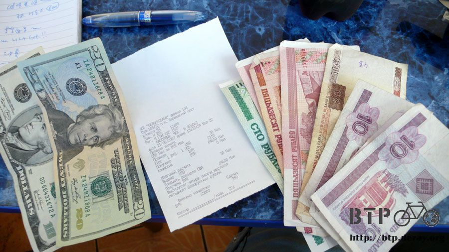
也好，留著美金起碼不會變成壁紙，剩下都是百元以下的零錢，根本買不起任何東西，留著當作紀念品吧。
吃過午餐之後就是通關時間，此時下午一點整，拿著白俄羅斯簽證準備進行下一個難關。
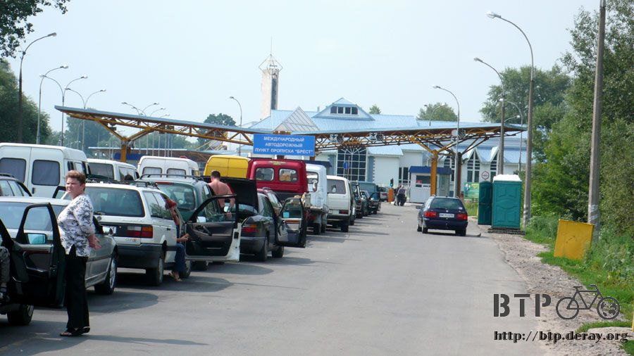
外頭一樣大排長龍，之前在路上遇到法國旅行者Inaki，他說這個國境很難搞，自行車不能通關，得搭車才行，當時他花了兩個小時才通關。
Inaki是法國人，手上拿法國護照，從同樣是歐盟國家的波蘭進入白俄羅斯都要花上兩個小時，那我該怎麼辦呢？

直接穿越大排長龍的車輛殺到最前面，海關人員攔下來說自行車不能走。
汽車可以走、摩托車也可以走，就是自行車跟步行不能通關，這邊也沒看到有接駁車或是巴士可以搭。
才在煩惱說該怎麼辦的時候，海關人員叫我等一下，然後攔下一輛準備要通關的廂型車，叫駕駛載著我通關。
真是好心的海關人員，就這麼卸下行李，把小多放在後座，通關的路順利展開中。

這輛車的駕駛是兩位白俄羅斯人，比較老頭髮蒼白的是『安納斯基』，年紀輕一點跟我相仿的則是『莫林』。
能夠搭上他們的車是算我幸運，當他們聽到我說自己從北京騎到這裡，他們眼睛一亮，反而覺得可以載到我是他們的福氣。
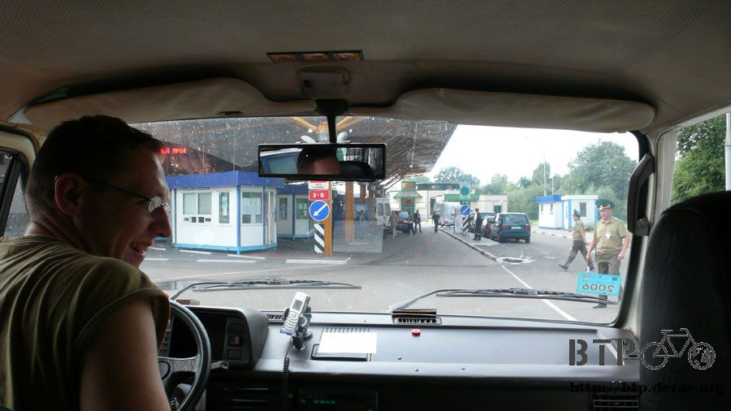
海關跟之前一樣分為兩邊，一邊在波蘭另一邊在白俄羅斯，但是跟之前很不一樣。
之前是這邊完成出境之後到另一邊去進行入境手續，這裡則是在單邊同時設立了白俄羅斯跟波蘭的海關處，一個地方就能夠完成出境跟入境。
接下來等進入波蘭之後會經過一模一樣的海關處，但是可以直直開過去連停都不用停下來，這時就換那邊在大排長龍等著辦出入境。
拿著護照下車，這裡停滿各式各樣的車輛，完全就是塞到爆炸。
光是排隊蓋出境章就等了好久，安納斯基跟莫林開車往返這兩國好幾十次，進出不需要簽證，只需要蓋章就可以。
一頁護照可以蓋十幾個章，他們都蓋完一整本的護照，接著用第二本在蓋章，我很想問他們這麼頻繁的往返這兩國有什麼目的嗎？
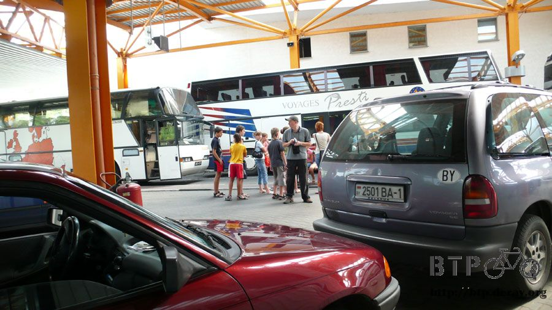
無論如何，他們兩個要出入境是非常容易的，但是卡在多載了一個我，害他們也跟著延誤通關的時間。
在白俄羅斯出境的時候，海關檢查護照就看了半個多小時，還用紫外線燈查看護照的真偽，看得超級久，這是護照耶～又不是什麼經典名著。

接著是檢查車輛，明明就是大白天還裝模作樣用手電筒照車子裡面，然後問我行李裡面裝什麼東西？
我就碎碎唸的用中文說『還不就是海洛英、古柯鹼這一類的，沒什麼大不了啦。』當然對方聽不懂，然後簡單的打開行李給海關人員看過。
本來我覺得白俄羅斯的海關已經夠龜毛了，其實最龜毛的還在後頭。
同樣一個關卡，完成白俄羅斯的出境手續之後，車子往前開十公尺，接著要進行波蘭的入境手續。
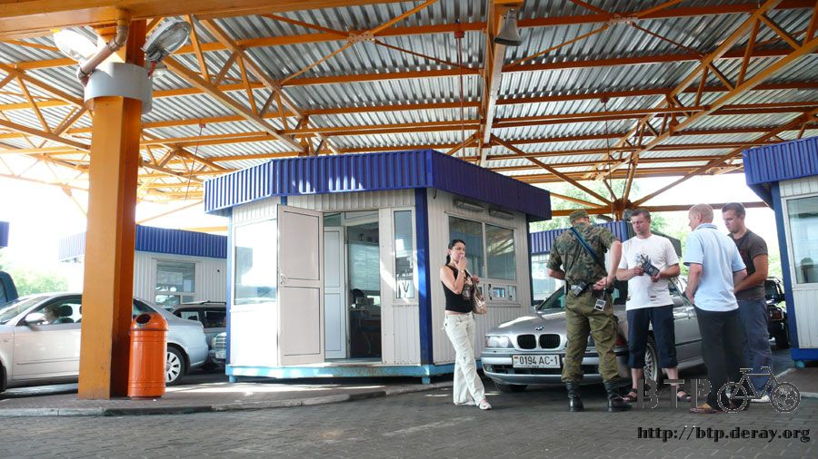
安納斯基跟莫林的護照只花了不超過三十秒就蓋上入境章，但是我被盤查超過一個小時，入境波蘭可以搞得這麼複雜，真是讓我肚濫到了極點。
一個會說英文的海關人員拿著一份表格然後說『我們有一些問題要問你。』
接著就是問不完的問題大放送：
你身上帶多少美金入境？
五百。
在波蘭有預定住宿的旅館嗎？
沒有？
過夜的問題打算怎麼解決？
臨時找旅館。(絕對不要說露營）
萬一你在波蘭出了意外我們該連繫誰？
我拿出安泰人壽的保單，上面有緊急連絡電話。
你有當初申請簽證時的文件嗎？
再度拿出外交部的公文，大意是說我要騎單車跨歐亞，請相關單位盡可能的給予協助。
對方看著這份文件，然後問我說上面寫到會經過烏克蘭，為什麼我從白俄羅斯走？
因為烏克蘭的簽證辦理很貴而且費時。
又問那我接下來會不會又隨意變更路線？
干你屁事......我是說，應該不會。
你在波蘭有親友嗎？
這次拿出小鵝的地址跟波蘭身分證影本。
你是台灣人還是中國人？
哇哩咧～要搞死我就對了，我將護照翻到正面，上面同時寫著『REPUBLIC OF CHINA』跟『TAIWAN』，你自己看著辦吧。
就像這樣子不停的問一些有的沒的問題，整整問了一個小時，安納斯基跟莫林在外頭都抽光一包菸了我還沒辦法入境。
最後好不容易擺脫海關的糾纏，得以在簽證上面蓋上入境章，感謝老天爺的保佑，希望出境波蘭的時候不要又來一次。
在白俄羅斯的關口同時完成出境跟入境的手續之後，接下來開車繼續往前走，直直開都不用停，就進入波蘭了。
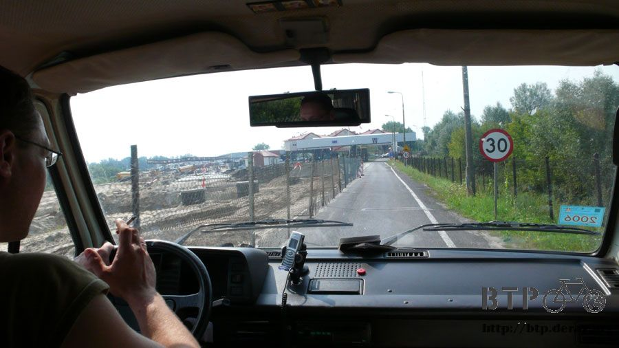
腰包裡剩下很多五元、兩元、一元的俄羅斯盧布硬幣，留著對我沒有用，全部都給他們當作載我通關的謝禮，更不好意思讓你們等那麼久的時間。
走出國境之後停在這間商店的停車場，接下來就要靠我自己啦。
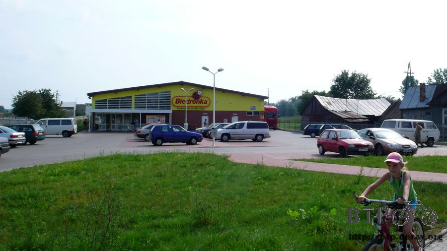
臨走前拍一張大合照。最右邊是莫林，中間是安納斯基，左邊是被波蘭海關煩到想要自殺的我。

從車上拿出一堆的包包，還沒掛上小多，這麼多行李看起來真是驚人，小多這一路上辛苦你了。
就這麼樣的，早上在奔波辦簽證，中午頭大的通關，下午三點半才正式開始騎車，波蘭旅行的第一天正式展開。
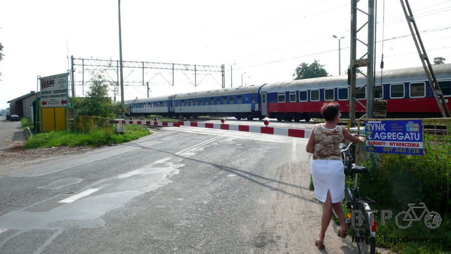
黃色的告示牌寫著Objazd，全部都是英文字母，奇怪的俄文字母已經看不見了，招牌中有個地名是華沙，跟著走準沒錯。

果然跟預料的一樣，E30這一條路從白俄羅斯通到波蘭同樣叫這個名字，同時又名紅色二號，跟著走就是光明大道啦。
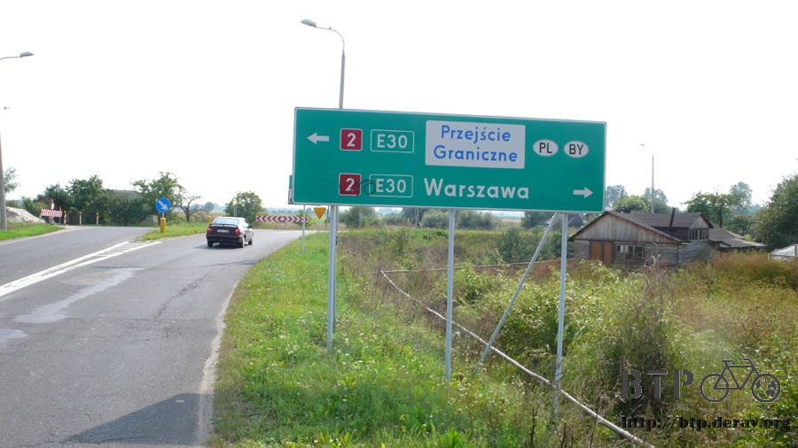
波蘭的路況好得令人驚訝，超平坦的路沒有絲毫的坑洞，代價就是施工的情況太普遍了，整段路施工的情形很普遍，常常都是車道縮減。

這邊沒有工人管制，前後兩方都有機器控制的紅綠燈，不想等的話也可以牽著車走施工中的路段。

終於發現有距離情報的指示牌，往首都是一百九十公里，這次不太想經過首都，從地圖上看是要繞路才進得去。
往波茲南則是四百八十三公里，那是波蘭的另一個大城市，小鵝也住在那邊，包含今天在內打算用四天的時間騎到波茲南去找小鵝。
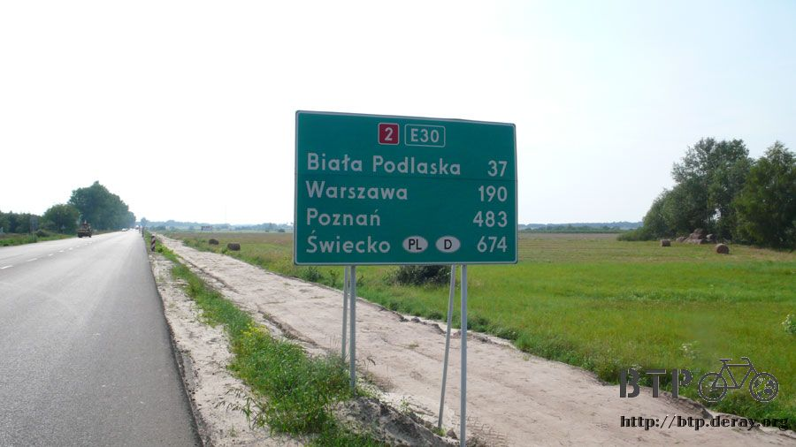
沿路加油站、商店、旅館、城鎮，好多呀～一點也荒涼不起來，隨處可見這些方便的補給點。
但是目前身上沒有波蘭的貨幣，抵達波茲南之前也不打算住旅館，只需要露營三天就可以全身髒兮兮的去給小鵝招待了。

停車場停很多架飛機，跟那個餐廳門口停一堆坦克有得拼。
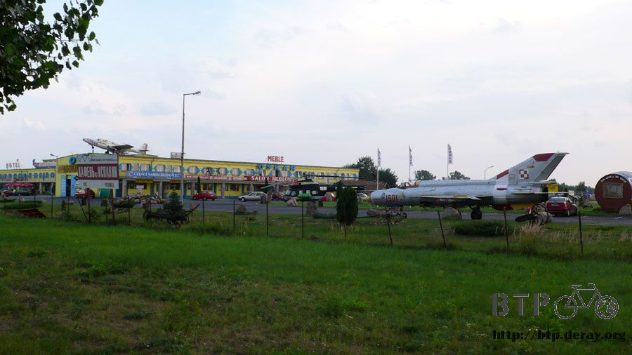
這是現在騎的紅色2號路的距離指示牌，這條路一共有六百多公里長，騎到盡頭就是德國了，其實距離不遠～大概五天？六天？
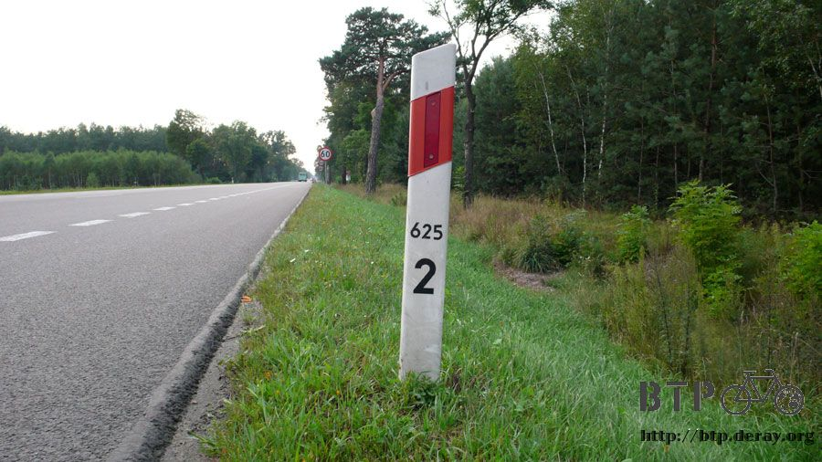
新的單字有一句很重要，進入波蘭之後旅館的招牌變成簡單易懂的『HOTEL』，但是商店的招牌則不再是熟悉的俄文寫法。
新的商店招牌為『SKLEP』，以後看到這個就知道喝飲料吃冰的時候到了。
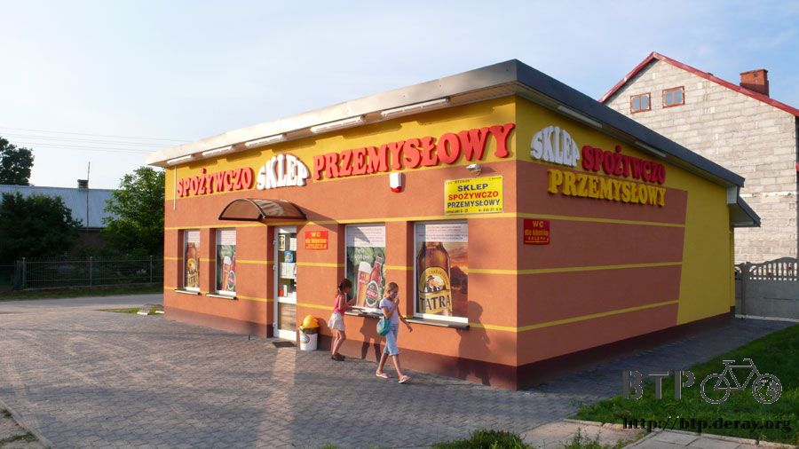
進去裡面買冰涼的汽水喝，問店員說收美金嗎？對方點頭說可以。
我將身上的三十元拿出來，對方按計算機，乘以二點二，只換回六十六元的波蘭貨幣『茲羅提』。
真是超爛的匯率，正常來說一美金至少能換二點七茲羅提。
一瓶兩公升的汽水則要價七元，幾個小時之前一瓶還用三千多元的貨幣在購買，現在只需要七元當下覺得真是超級便宜！
等付過帳開瓶喝起來才開始計算匯率，一茲羅提約等於十五台幣，所以七元的汽水就是一百元的高價，同樣的飲料在俄羅斯只需要半價而已。
物價又向上翻了一倍，省吃儉用的時候到了，不知道還有沒有機會進餐廳大啖美食，不用顧忌帳單的金額。
波蘭的公車站，看起來真像監獄，想起今天只差一點點就要被抓去關了，還好我沒有頂嘴所以逃過牢獄之災。
這個公車站是相對豪華的，接下來看到的都是破破爛爛，沒有椅子外加一堆噴漆，甚至連屋頂都被拆掉，不知道有沒有睡波蘭公車站的可能？

路上那個黃色的大叉叉是非常好笑的標誌，它的意思是說這條雙黃線劃錯了，隔壁那一條才是分隔線。
一路上這條雙黃線就這麼打叉叉的劃下去，這條路很明顯是新鋪好了，才剛鋪好就劃錯交通線，劃錯也不塗掉而是用打叉的方式，波蘭人蠻有趣的。
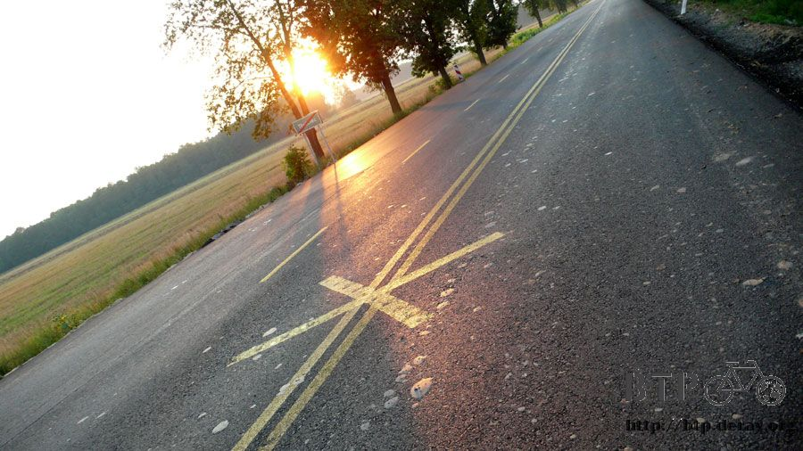
三點半開始騎車，九點的時候天就黑了，這段時間都沒有吃東西，只喝了兩公升的汽水。
肚子也不怎麼餓，吃些餅乾沒讓胃空著就敷衍了事，為了在星期五的時候可以到波茲南，所以今天至少也得騎上一百公里。

沒時間停下來吃飯，希望在太陽下山之前趕點路，波蘭人騎自行車非常的普遍，進入村鎮之後自行車算是主要交通工具。
看著這蔚藍的天空，今天會下雨嗎？對自己的天氣預報有點沒信心。
我可以很有把握的說出會下雨的日子，但是對於不會下雨則沒那麼肯定，雖然雲層不多，但是空氣中的濕氣很重。
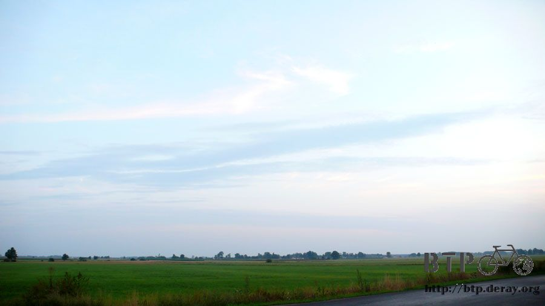
不想賭得太大，晚上還是找有屋頂的地方睡覺比較保險，騎在路上的時候經過了這一棟廢棄的空屋。
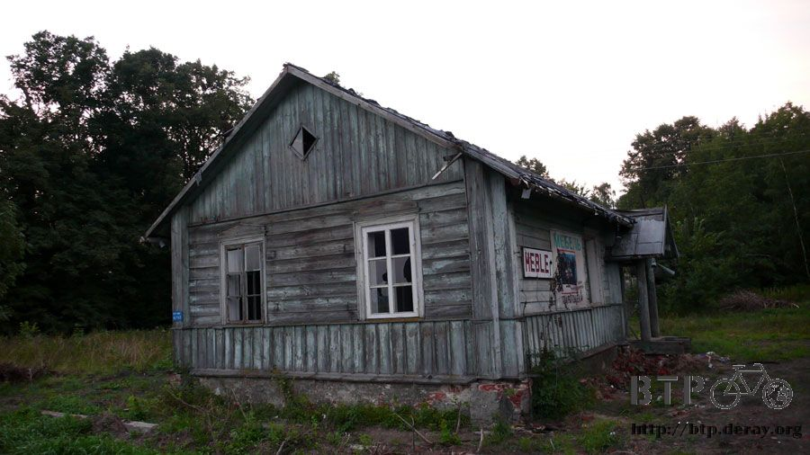
外觀還算完整，玻璃破了一些倒無所謂，這又不是我家，牽車到門口準備進去查看一下情況。
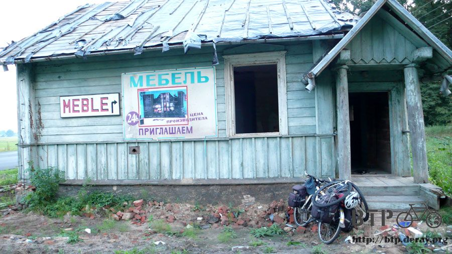
門上貼著廣告感覺好像是這棟房子在出售，買下的人可以經營成二十四小時的休息站賺大錢。
進去裡面一看，驚為天人的乾淨，不愧是打廣告要賣的房子，相當的有水準。
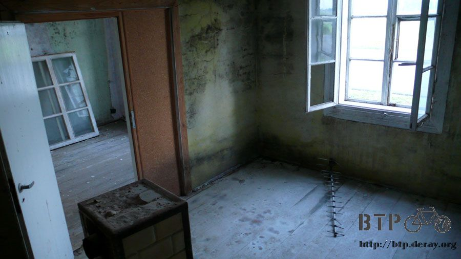
幾乎是一塵不染的地面只有些許的油漆剝落，房子裡面很乾淨，沒有空酒瓶就令人放心自己不是住到遊民的集散地。
透過破掉的窗戶還能看到外頭的情況，住在裡面也通風涼快的多，沒有密室的恐懼感。

依照廢棄空屋的評價標準來看，這一間已經是四星級的水準，如果有電力供應的話就是五顆星了。
在波蘭的第一天晚上就在這裡打地鋪，簡單擦過澡之後被飛進來的鳥給嚇一跳，天花板破了一個洞，鳥從窗戶飛進房子穿過天花板在屋頂底下築巢。
今天讓我在這邊待一晚，不會打擾你太多，晚上不要在我頭上大便。

這麼好睡的房子，居然翻來覆去幾乎失眠一晚上，而且是沒道理的失眠，都已經通關進入歐洲了，落腳處又這麼的舒適，怎麼會睡不著呢？
肚子是咕嚕咕嚕的叫沒錯，但也不至於餓得睡不著呀。
最後的結論是，因為旅程快結束了，正式進入歐洲整個感覺就很不一樣，今晚是興奮的失眠呀！
繼續閱讀：8.22 艱苦呀
俄羅斯-盧布－ 1：1.3 台幣
8.21 |
總計：2189元 |
為了出境不得不辦的白俄羅斯簽證132000元、街邊商店可樂、巧克力6000元、花光BLR的大採購巧克力五包10000元、午餐炸雞排、薯條、三瓶可樂、九條巧克力27000元。總記175000BLR，折合盧布2189元 |
|
波蘭-茲羅提－ 1：12 台幣
8.21 |
總計：7元 |
物價又上漲一倍的可樂7元 |
|